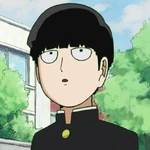

About Mob Psycho 100
Mob Psycho 100 is the story about a young middle schooler, Shigeo Kageyama, nicknamed "Mob" living in Seasoning City. Ever since he was young, he has had astounding psychic powers. However, this esper power is unable to grant him the one thing he wishes for the most: to be friends with the girl he likes in his class.
Favorite Characters
- Shigeo Kagayema: Also known as Mob. He is the main character of this story.
- Reigen Arataka: The mentor and employer of Mob.
Gallery


Why I Love This Anime
Mob Psycho 100 is a funny and educating anime. It has great animation and characters. It shows the struggles of a middle schooler trying to find a place in the world.